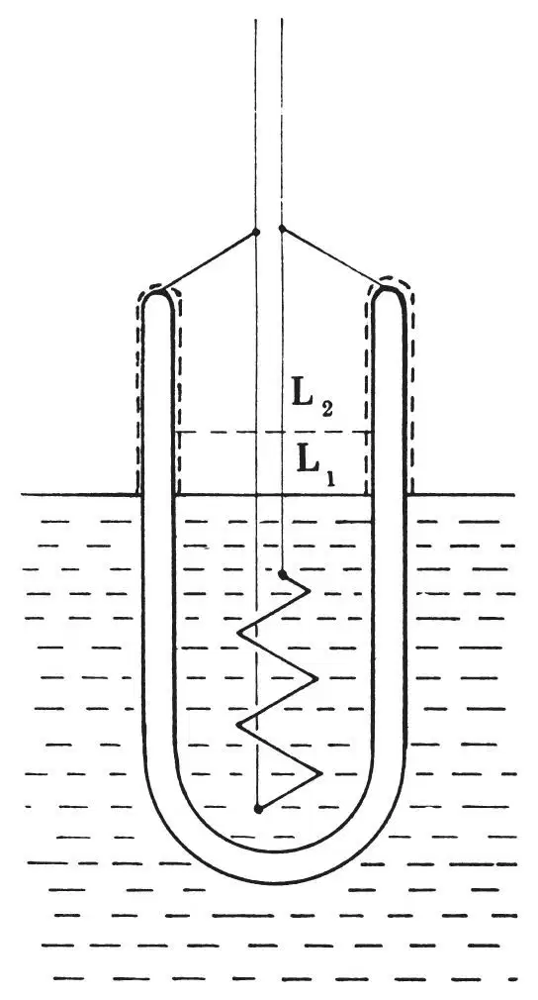
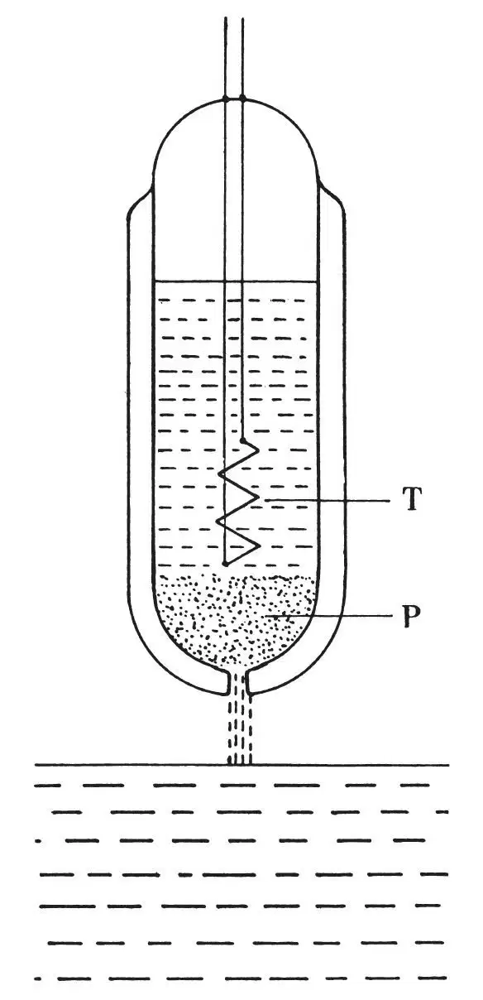

中文
中文J. G. Daunt and K. Mendelssohn
Editor’s Note
Experimenters had recently discovered some strange behaviours in liquid helium—in particular, its seeming ability to flow with no viscosity. Here physicists John Daunt and Kurt Mendelssohn of the Clarendon Laboratory in Oxford report a further odd effect. They had placed a container, open at the top and holding liquid helium, into a bath of the same liquid. Applying heat inside the vessel, they had found that a thin film of liquid flowed up and over the vessel’s lip, linking the two otherwise separate fluids. The authors suggest that the phenomenon may be linked to the recently noted “fountain effect”, in which the heat from a weak light beam can expel a jet of liquid helium from a container. 中文
IN our previous communications1 on the “transfer” of liquid helium II by a surface film above the liquid level, we stressed the similarity of this “transfer” with the so-called transport phenomena in the free liquid, and suggested that the latter might be due to a process similar to the transfer above the liquid level. Later experiments on the formation of this film2 seemed further to strengthen the conception that there existed a similar surface transport below the liquid level, and we have recently made two observations which seem to corroborate this hypothesis:
(a) A small Dewar vessel (see Fig. 1) containing a heating coil was suspended by a thread in a bath of liquid helium II. When no heat was supplied, the levels of the liquid both inside and outside the vessel adjusted themselves to the same height L1, owing to the “transfer” through the film on the interconnecting glass surface. When, however, a current was passed through the heating coil, the level of the liquid inside the vessel rose above the outside level and took up an equilibrium position L2. By increasing the connecting surface between the vessel and bath by a number of wires, differences between inside and outside levels up to 5 mm. could be obtained. This clearly shows that there exists a “transfer” of helium from a colder to a hotter place when a temperature gradient is imposed. On further increasing the heat supplied, however, the evaporation from the vessel became the predominant factor and the inside level fell below that of the bath. 中文

Fig. 1 中文
This effect is quite analogous to the “fountain phenomenon” in the bulk liquid, discovered by Allen and Jones3. However, in the present case the transfer of liquid must be carried out through the surface film above the liquid level, which shows that there exists a flow of helium against a temperature gradient, even if the two containers are not connected by free liquid. One may conclude therefore that the “fountain phenomenon” in the bulk liquid is probably also due to a surface transfer, though in this case along the surface below the liquid level. This hypothesis is further strengthened by the fact that the “fountain phenomenon” is more pronounced when tubes containing fine powder are used to connect the two volumes of liquid rather than a straight capillary, for which the available surface is comparatively small4. 中文
(b) A Dewar vessel (see Fig. 2) was closed at the top and had a hole at the lower end which was constricted by a plug, P, of fine emery powder. It contained a phosphor-bronze thermometer, T, and was suspended in a bath of liquid helium II. When the Dewar vessel was lifted out of the bath, the liquid ran rapidly out of the vessel through P and fell into the bath, and at the same time the temperature of the inside liquid was noticed to rise by about 0.01°. On lowering the vessel so that now liquid ran from the bath into the vessel, the liquid inside was cooled by a similar amount. 中文

Fig. 2 中文
This mechano–caloric effect is evidently the reverse of the “fountain phenomenon”, for whereas the latter means that the setting up of a temperature difference results in a flow of liquid helium II, the mechano–caloric effect shows that a flow of liquid helium II is accompanied by a development of heat (or cold). Such a caloric effect has actually been postulated by Tisza5 for a flow of liquid helium II through capillaries. It seems to us, however, that the anomalous phenomena of liquid helium II are not so much caused by capillary flow as by a transport along solid surfaces; and these results seem to indicate that the heat content of those atoms transported by surface flow must be lower than average. The hypothesis that the transport phenomena in the bulk liquid are due (at least primarily) to a surface transport similar to the “transfer” above the liquid level seems also to agree with observations by Allen and Misener6 and H. London7, as well as with theoretical considerations of F. London8. 中文
A more detailed discussion of this tentative explanation with regard to these and other results will be given elsewhere. 中文
(143, 719-720; 1939)
J. G. Daunt and K. Mendelssohn: Clarendon Laboratory, Oxford, March 21.
References:
1. Daunt and Mendelssohn, Nature, 141, 911; and 142, 475 (1938) and Proc. Roy. Soc., in the Press.
2. To be published shortly.
3. Allen and Jones, Nature, 141, 243 (1938).
4. Allen and Reekie, Proc. Camb. Phil. Soc., 35, 114 (1939).
5. Tisza, Nature, 141, 913 (1938); C.R., 207, 1186 (1938).
6. Allen and Misener, Nature, 142, 643 (1938); see also Allen and Jones, Nature, 143, 227 (1939).
7. London, H., Nature, 142, 612 (1938).
8. London, F., Phys. Rev., 54, 947 (1938).